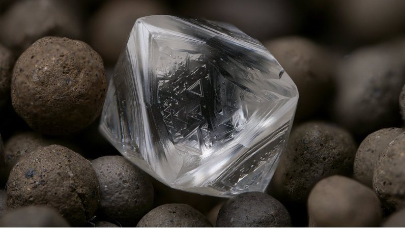

Diamond
Diamond is the hardest natural substance known. It is formed deep in the mantle and is only brought to the surface via kimberlite pipes, lamprophyres, eclogites and other rocks that originate deep within the mantle. It is also found in alluvial deposits, along with quartz, corundum, zircon and other minerals, derived from such rocks, and in certain meteorites.